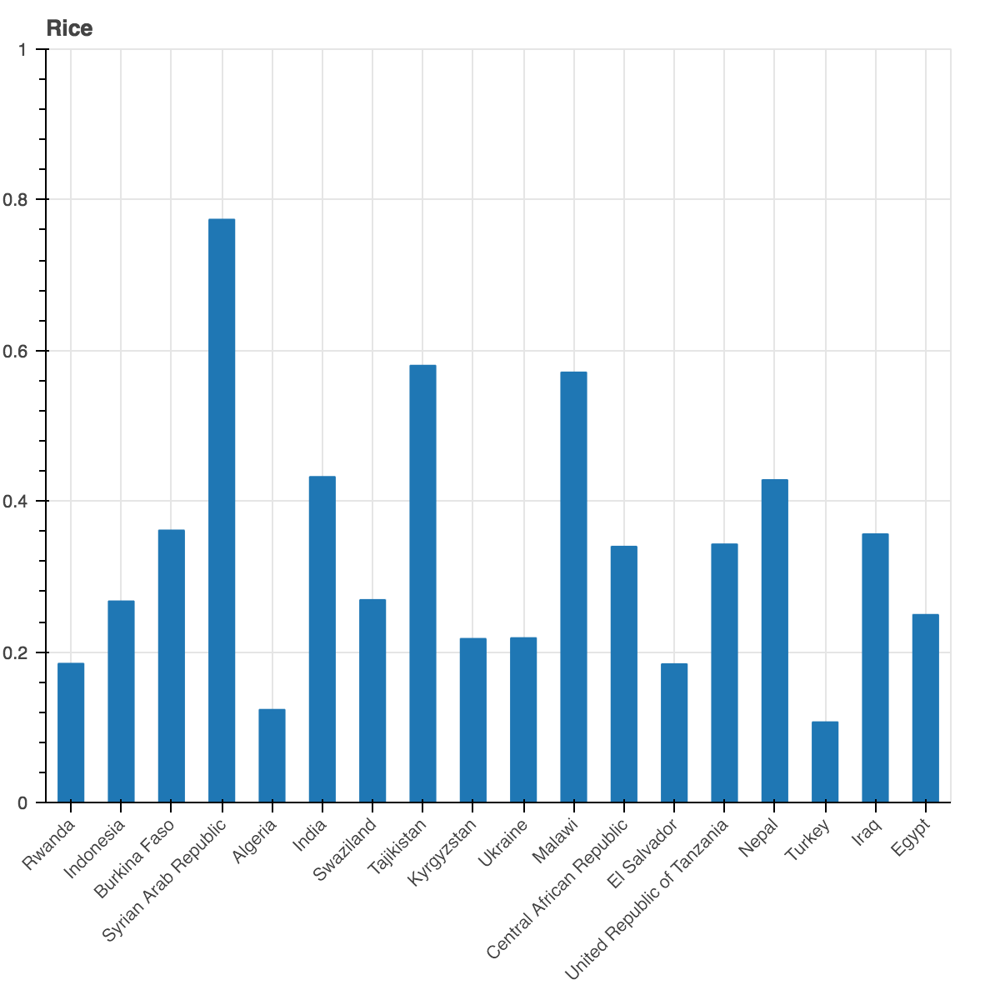
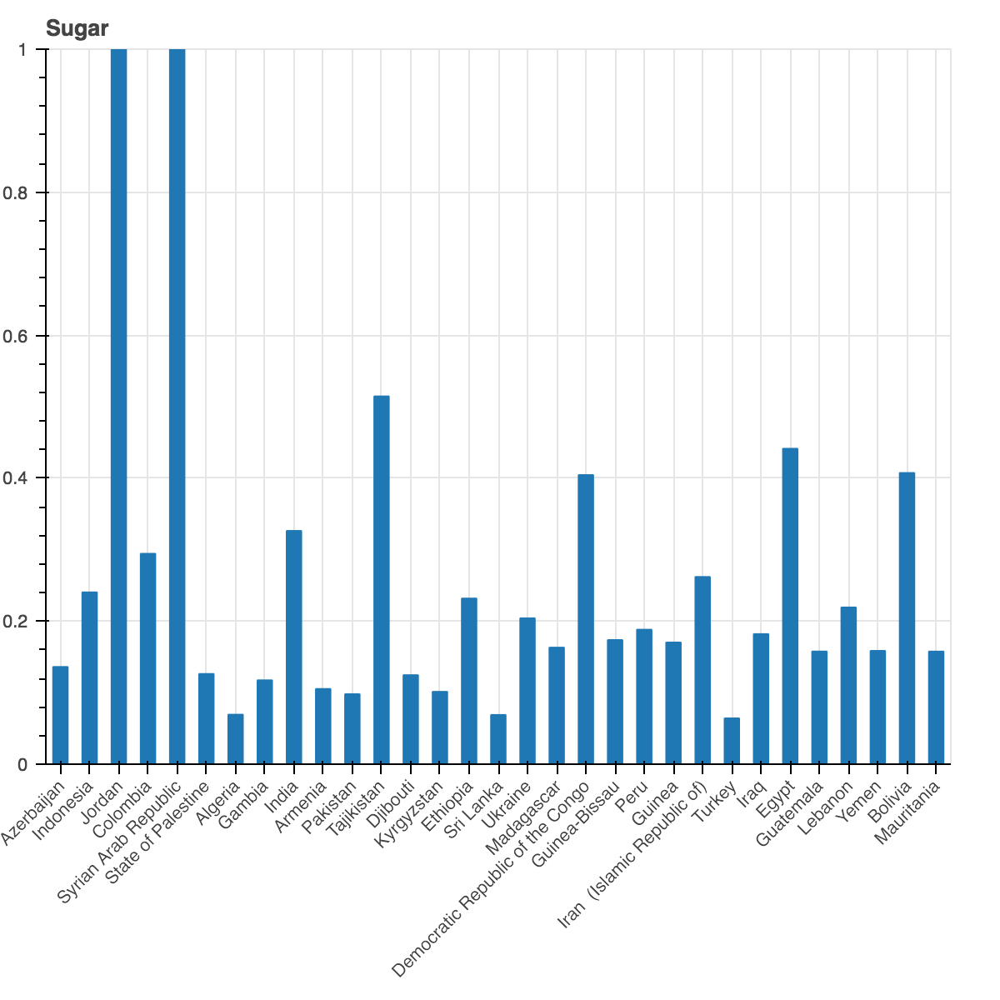
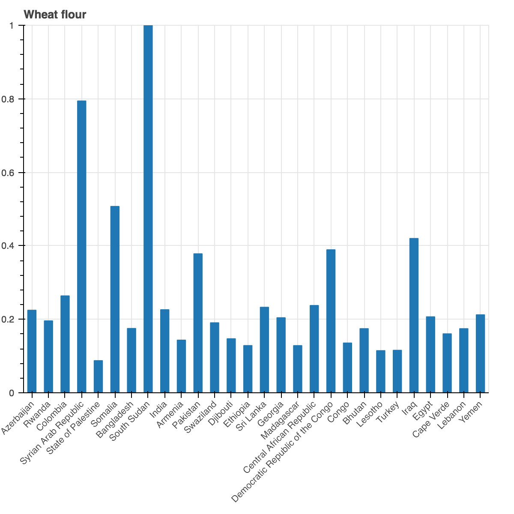
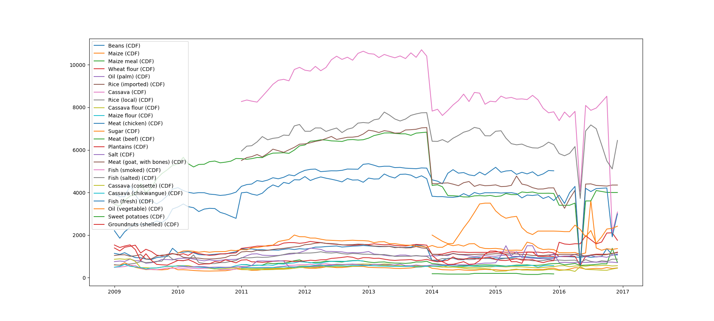

While searching for answers to our questions, we came across some remarkable things that stood out in the data. Here are three things we found to be worth mentioning.
We found that in the countries where the standard deviations for prices were the highest, there were usually armed conflicts going on. For example, looking at some of the products with the most data, we can see countries like Syria, South Sudan, Tajikistan and Egypt have the highest standard deviations.
  When looking at the prices of different products in DR Congo, we noticed that in the beginning of 2014 and in 2016, almost all prices suddenly dropped. The drop in 2014 could be related to an event on December 30, 2013, where Congolese youth attacked several targets in the capital, Kinshasha, including the airport, a military barracks and state television headquarters. The drop in 2016 goes down and come right back up. This is probably related to the protests that happened after the current president refused to step off at the end of his term.
We found that there were some strong negative correlations between the price changes of catfish and other products. Since there were barely any other negative correlations, we decided to analyse this. While other products in Laos got cheaper, since 2014, catfish became more expensive. By 2012, the catfish was already an endangered species, but in that year the building of the Xayaburi dam started. The catfish population there was predicted to go extinct as a result of this. Stronger regional intervention to prevent overfishing was probably the reason for the increase in price.